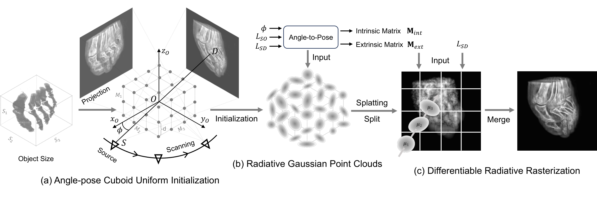
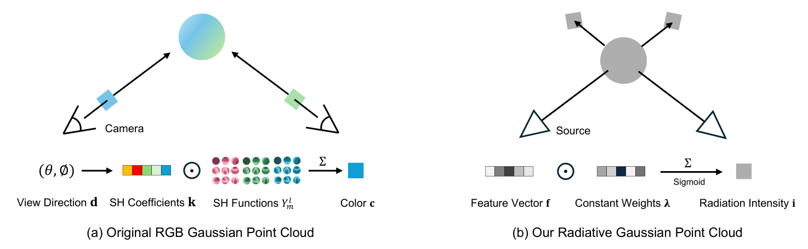
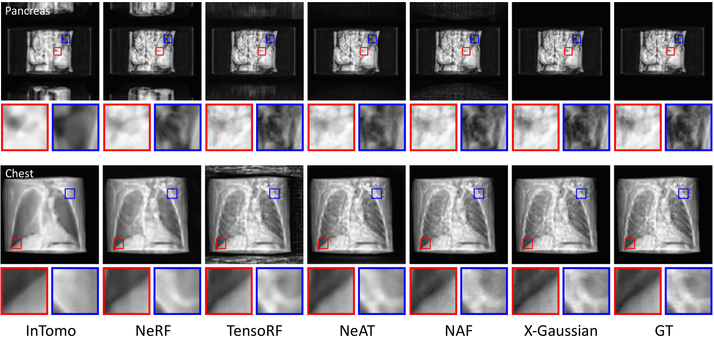
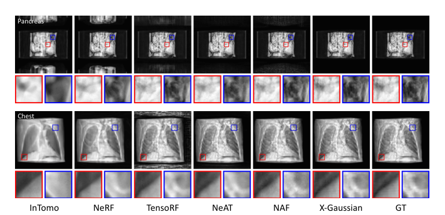
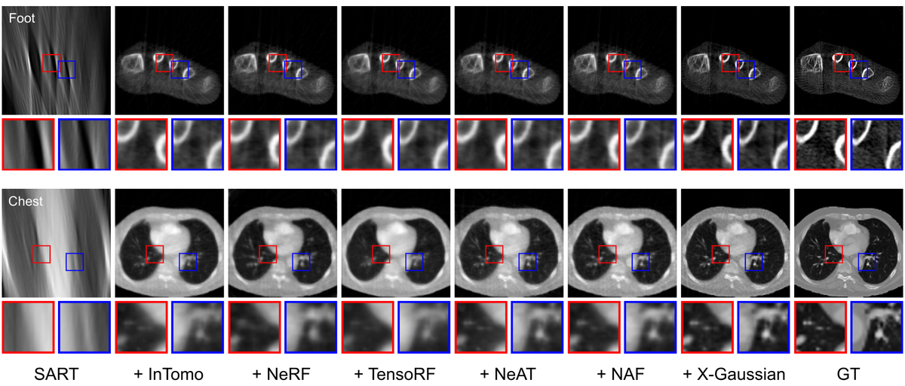
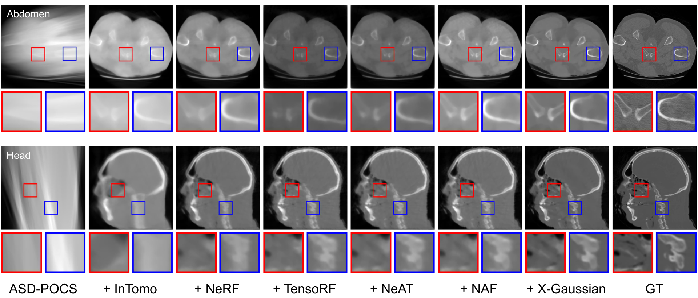
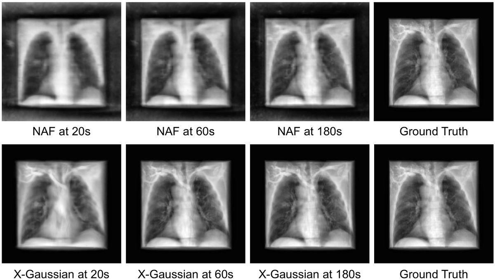

Radiative
简单摘要
这篇工作要解决的问题是：X射线因其比自然光更强的穿透力而被广泛应用于透射成像。
对应的核心做法是：在渲染新颖的视图X射线投影时，现有的主要基于NeRF的方法存在训练时间长、推理速度慢的问题。
从机制上看，关键设计在于：在本文中，我们提出了一种基于 3D 高斯溅射的框架，即 X-Gaussian，用于 X 射线新视图合成。
训练或推理层面的重点是：首先，受 X 射线成像各向同性性质的启发，我们重新设计了辐射高斯点云模型。
实验层面的主要信号是：我们的模型在学习预测 3D 点的辐射强度时排除了视角方向的影响。


简而言之，这篇论文关注的核心是：这篇工作要解决的问题是：X射线因其比自然光更强的穿透力而被广泛应用于透射成像。 对应的核心做法是：在渲染新颖的视图X射线投影时，现有的主要基于NeRF的方法存在训练时间长、推理速度慢的问题。 从机制上看，关键设计在于：在本文中，我们提出了一种基于 3D 高斯溅射的框架，即 X-Gaussian，用…
这篇工作要解决的问题是：2mmwrappfigurer0.39 -13mm中心-2mm中心-6mmPSNR-分钟-fps比较。
对应的核心做法是：圆圈的半径代表训练时间（分钟）。
从机制上看，关键设计在于：5mm 环绕图形 X 射线新颖视图合成 (NVS) 旨在仅使用从不同视图方向扫描的现有投影，从最初未捕获的新视点创建物体的 X 射线投影。
训练或推理层面的重点是：众所周知，X射线具有较强的穿透力，可以捕获成像物体的内部结构，因此在医学成像中得到广泛应用。
实验层面的主要信号是：然而，X射线由于其强大的电离辐射对人体有害，特别是当X射线剂量增加时。
核心创新
综合引言与方法部分，这篇论文的核心创新可以概括为以下几方面：
1）问题定义与研究动机
这篇工作要解决的问题是：2mmwrappfigurer0.39 -13mm中心-2mm中心-6mmPSNR-分钟-fps比较。
对应的核心做法是：圆圈的半径代表训练时间（分钟）。
从机制上看，关键设计在于：5mm 环绕图形 X 射线新颖视图合成 (NVS) 旨在仅使用从不同视图方向扫描的现有投影，从最初未捕获的新视点创建物体的 X 射线投影。
训练或推理层面的重点是：众所周知，X射线具有较强的穿透力，可以捕获成像物体的内部结构，因此在医学成像中得到广泛应用。
实验层面的主要信号是：然而，X射线由于其强大的电离辐射对人体有害，特别是当X射线剂量增加时。
2）方法框架与核心模块
这篇工作要解决的问题是：2mm 我们的 X-Gaussian 的管道如图 1 所示。
对应的核心做法是：首先，我们设计了一个角位姿长方体均匀初始化（ACUI）来根据 X 射线扫描仪的参数计算内在和外在矩阵，如图 2 所示。
从机制上看，关键设计在于：然后，ACUI 对一个长方体内的 3D 点进行均匀采样，该长方体可以完全包围扫描对象，以初始化图 1 中辐射高斯点云的中心位置。
训练或推理层面的重点是：给定视图方向，3D 点云经过可微辐射光栅化 (DRR) 来导出渲染图像，如图 1 所示。
实验层面的主要信号是：在本节中，我们将首先介绍辐射高斯点云模型和 DRR 处理，然后介绍 ACUI 策略。
3）实验设计与工程价值
这篇工作要解决的问题是：2mm 实验设置 -1mm 数据集。
对应的核心做法是：在NAF之后，我们采用人体器官CT的公共数据集，即LIDC-IDRI和开放科学可视化数据集来评估我们的方法。
从机制上看，关键设计在于：测试场景包括胸部、足部、头部、腹部和胰腺。
训练或推理层面的重点是：我们采用开源断层扫描工具箱 TIGRE 在 0 180 范围内捕获 100 个具有 3% 噪声的投影。
实验层面的主要信号是：在 NVS 任务中，50 个投影用于训练，另外 50 个投影用于测试。
技术细节
下面按照论文的方法章节结构展开，重点说明模型的关键模块、公式设计和训练策略。
这篇工作要解决的问题是：2mm 我们的 X-Gaussian 的管道如图 1 所示。
对应的核心做法是：首先，我们设计了一个角位姿长方体均匀初始化（ACUI）来根据 X 射线扫描仪的参数计算内在和外在矩阵，如图 2 所示。
从机制上看，关键设计在于：然后，ACUI 对一个长方体内的 3D 点进行均匀采样，该长方体可以完全包围扫描对象，以初始化图 1 中辐射高斯点云的中心位置。
训练或推理层面的重点是：给定视图方向，3D 点云经过可微辐射光栅化 (DRR) 来导出渲染图像，如图 1 所示。
实验层面的主要信号是：在本节中，我们将首先介绍辐射高斯点云模型和 DRR 处理，然后介绍 ACUI 策略。
$$ \mathcal{G} = \{G_i(\bm{\mu}_i, \mathbf{\Sigma}_i, \alpha_i)~|~i = 1, 2, \dots, N_p\}, $$
这条公式用于定义模型中的核心计算关系：左侧给出目标量，右侧由输入与参数共同决定。阅读时可先关注 G、G_i、i、N_p 的物理/几何含义，再看它们如何影响训练目标或渲染结果。
$$ \small \mathbf{c}(\mathbf{d}, \mathbf{k}) = \sum_{l = 0}^{L} \sum_{m = -l}^{l} k_l^m~Y_l^m(\theta, \phi), \vspace{-1.4mm} $$
这条公式用于定义模型中的核心计算关系：左侧给出目标量，右侧由输入与参数共同决定。阅读时可先关注 c、d、k、l 的物理/几何含义，再看它们如何影响训练目标或渲染结果。
$$ \small \mathbf{i}(\mathbf{f}) = \text{RIRF}(\mathbf{f}) = \text{Sigmoid}(\bm{\lambda} \odot \mathbf{f}), \vspace{-1.7mm} $$
这条公式用于定义模型中的核心计算关系：左侧给出目标量，右侧由输入与参数共同决定。阅读时可先关注 i、f 的物理/几何含义，再看它们如何影响训练目标或渲染结果。
$$ \small \mathcal{G}_x = \{G_i(\bm{\mu}_i, \mathbf{\Sigma}_i, \alpha_i, \mathbf{f}_i)~|~i = 1, 2, \dots, N_p\}, \vspace{-1.1mm} $$
这条公式用于定义模型中的核心计算关系：左侧给出目标量，右侧由输入与参数共同决定。阅读时可先关注 G、G_i、f、i 的物理/几何含义，再看它们如何影响训练目标或渲染结果。
$$ \small \mathbf{I} = F_{\text{DRR}}(\mathbf{M}_{ext}, \mathbf{M}_{int}, \{G_i(\bm{\mu}_i, \mathbf{\Sigma}_i, \alpha_i, \mathbf{f}_i)~|~{i = 1, 2, \dots, N_p}\}), \vspace{-0.4mm} $$
这条公式用于定义模型中的核心计算关系：左侧给出目标量，右侧由输入与参数共同决定。阅读时可先关注 I、M、G_i、f 的物理/几何含义，再看它们如何影响训练目标或渲染结果。
$$ \small P(\mathbf{x}|\mathrm{\bm{\mu}}_i, \mathrm{\bf \Sigma}_i) = \text{exp}\big(-\frac{1}{2}(\mathbf{x} - \bm{\mu}_i)^\top \mathrm{\bf \Sigma}_i^{-1} (\mathbf{x} - \bm{\mu}_i)\big). \vspace{-0.7mm} $$
这条公式用于定义模型中的核心计算关系：左侧给出目标量，右侧由输入与参数共同决定。阅读时可先关注 P、x 的物理/几何含义，再看它们如何影响训练目标或渲染结果。



把全文方法串起来看，这篇论文的逻辑基本都遵循同一条主线：先把输入组织成更容易处理的表示，再通过模型结构和损失函数把这个表示推向目标输出，最后用可视化与数值实验共同证明该设计有效。
实验结论
实验部分主要回答两个问题：第一，方法是否真的优于已有基线；第二，这种优势来自哪一个设计决策。
这篇工作要解决的问题是：2mm 实验设置 -1mm 数据集。
对应的核心做法是：在NAF之后，我们采用人体器官CT的公共数据集，即LIDC-IDRI和开放科学可视化数据集来评估我们的方法。
从机制上看，关键设计在于：测试场景包括胸部、足部、头部、腹部和胰腺。
训练或推理层面的重点是：我们采用开源断层扫描工具箱 TIGRE 在 0 180 范围内捕获 100 个具有 3% 噪声的投影。
实验层面的主要信号是：在 NVS 任务中，50 个投影用于训练，另外 50 个投影用于测试。



- 方法在核心指标上的优势与结构设计和训练目标直接相关；
- 消融实验表明，拿掉关键模块后性能与结果质量都有明显回落；
- 论文不仅比较数值，也关注可视化质量、稳定性和泛化能力等更贴近真实使用的信号。
理解评价
这篇工作要解决的问题是：2mm 与基于 NeRF 的方法相比，我们的 X-Gaussian 更复杂且更难遵循，因为它需要更多计算机图形学和 3D 视觉方面的基础背景知识。
对应的核心做法是：我们的X-Gaussian的许多技术细节都是由CUDA而不是Pytorch实现的。
从机制上看，关键设计在于：基于 C++ 的 CUDA 比依赖 Python 的 Pytorch 更难调试且更难解释。
训练或推理层面的重点是：3mm -2mm 在本文中，我们提出了第一个基于 3DGS 的框架 X-Gaussian，用于 X 射线新视图合成。
实验层面的主要信号是：首先，我们根据X射线成像特性设计了辐射高斯点云模型。
如果把它当成研究参考，建议重点关注三件事：第一，这套方法真正依赖的归纳偏置是什么；第二，实验中真正拉开差距的模块是哪一个；第三，它的局限究竟来自数据、算力还是监督信号本身。
以下相关论文可以作为进一步追踪的入口：